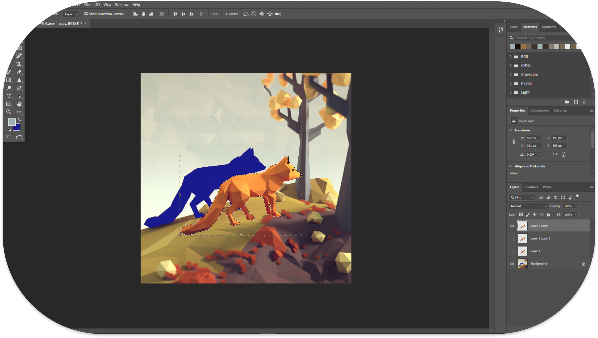
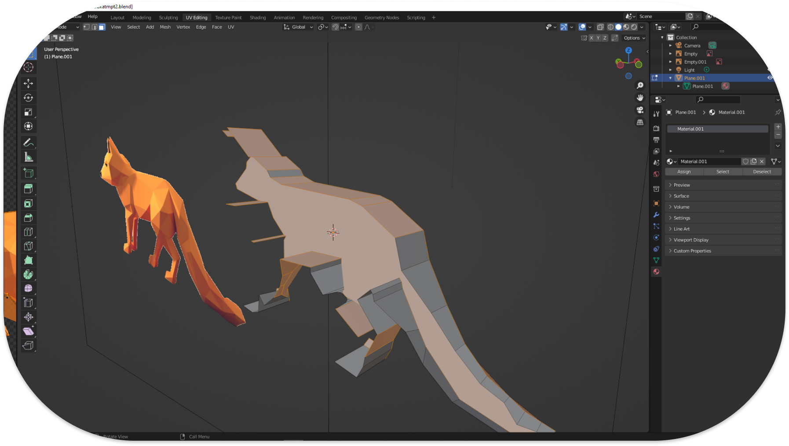
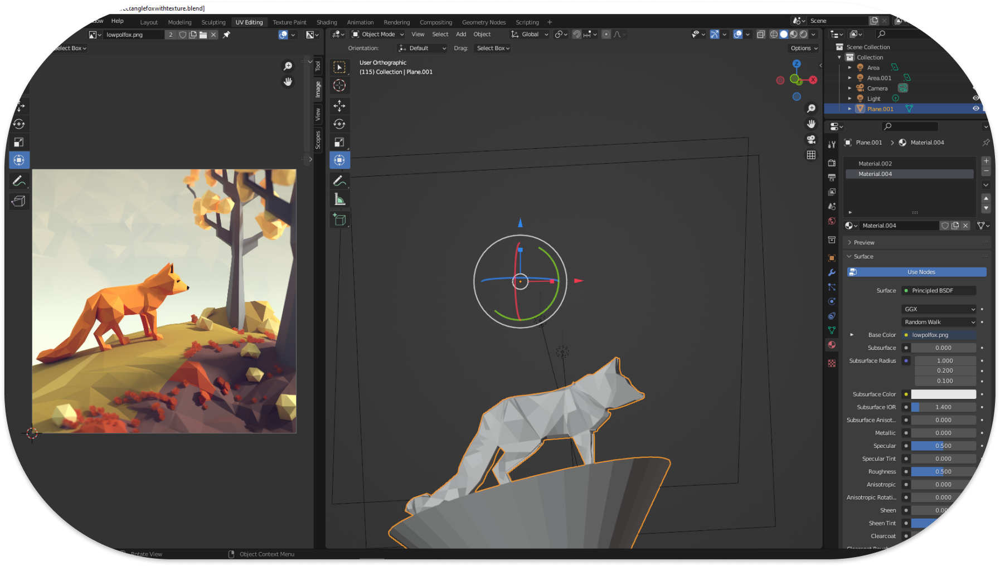
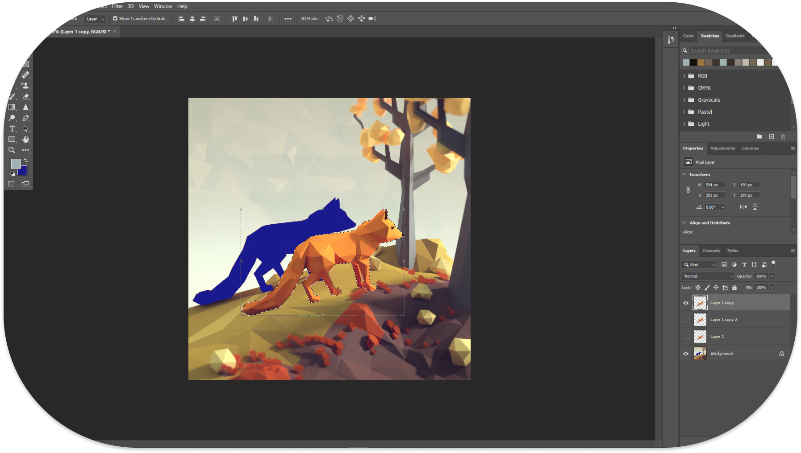
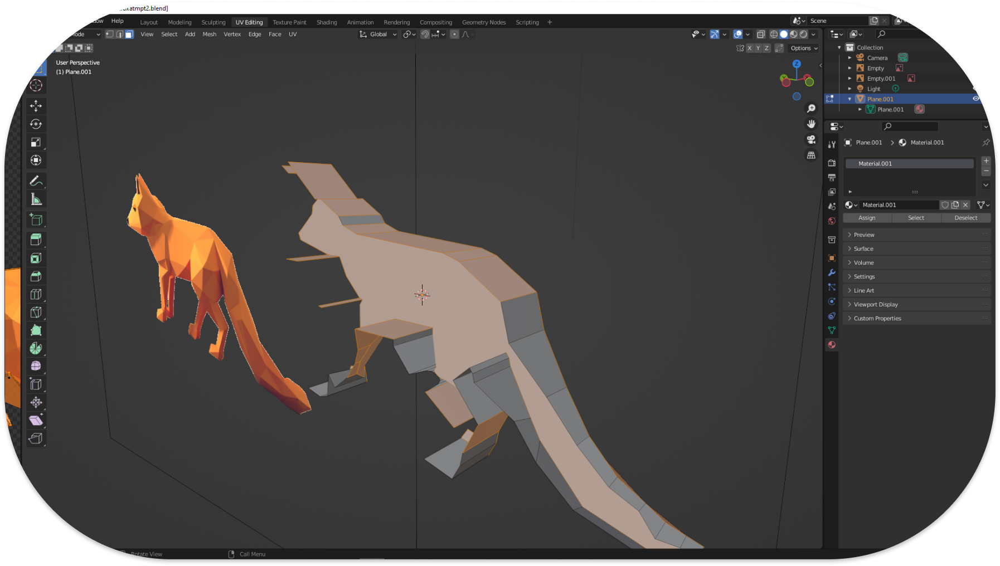
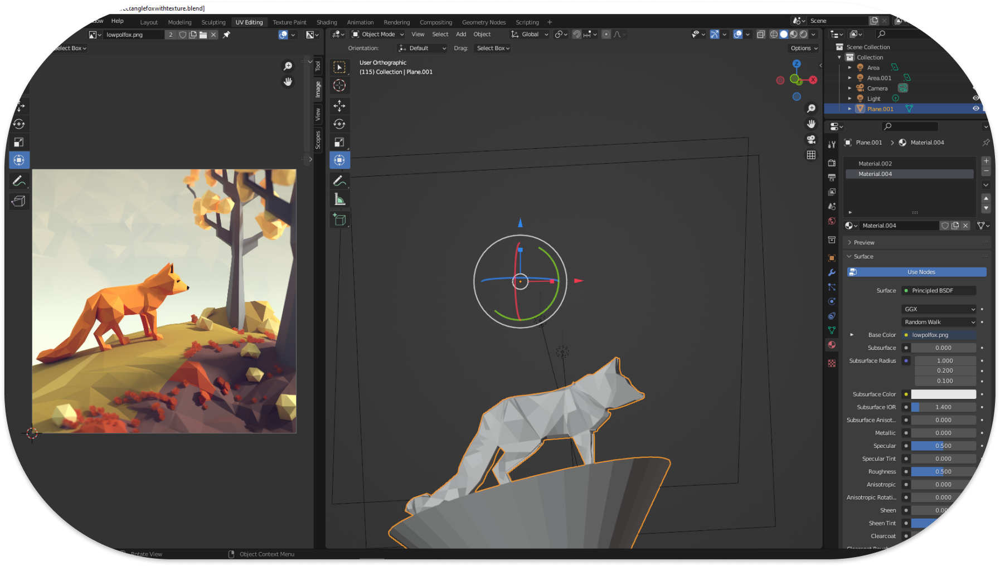
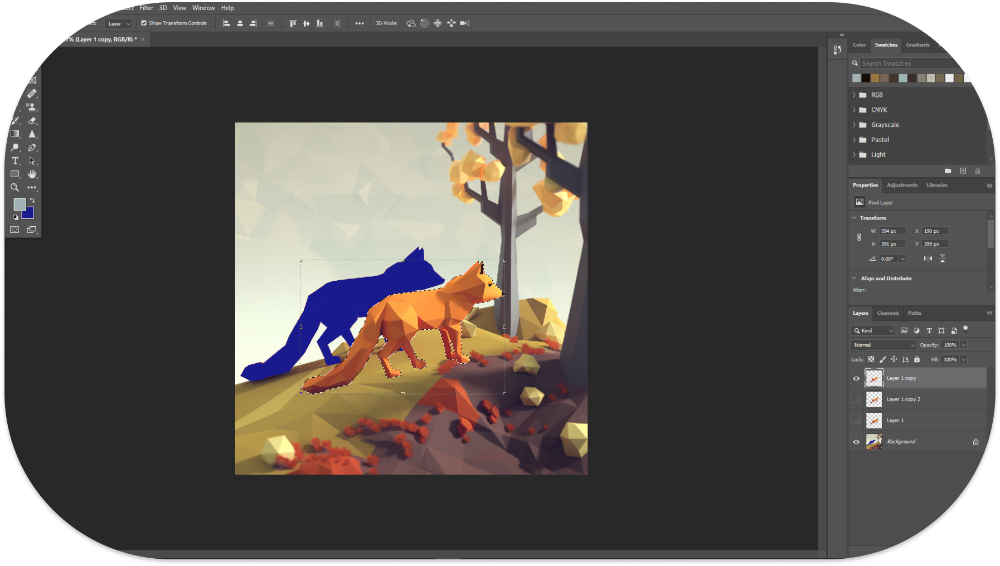
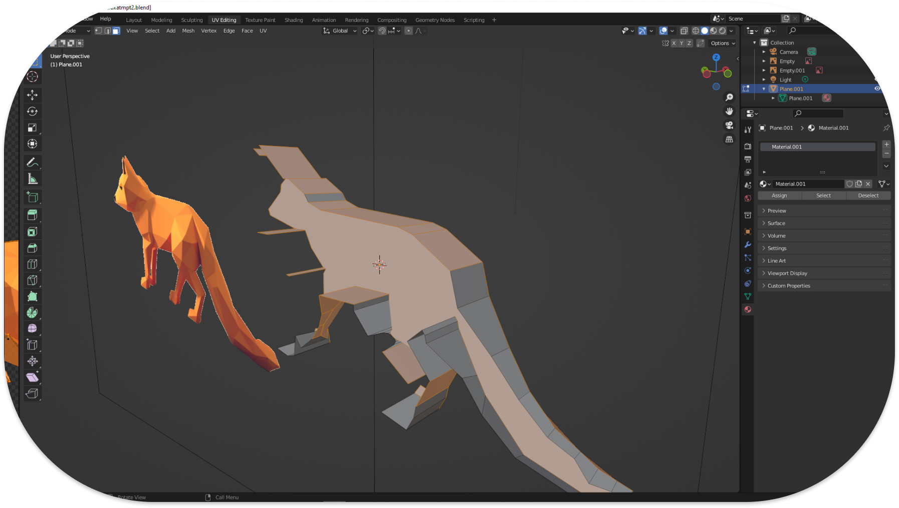
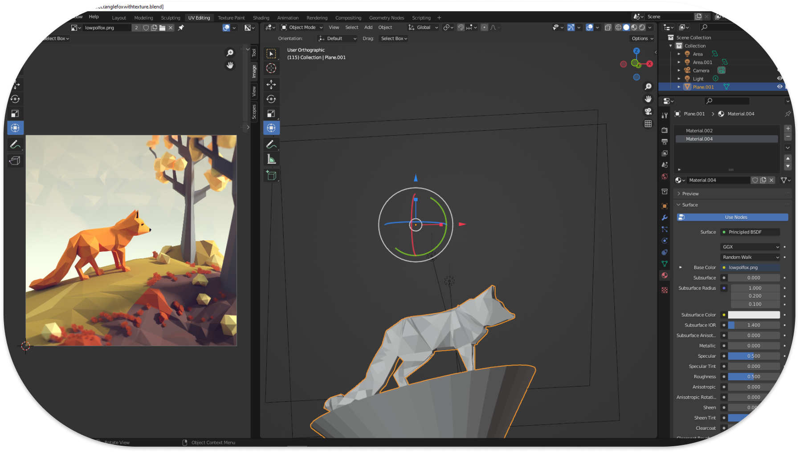
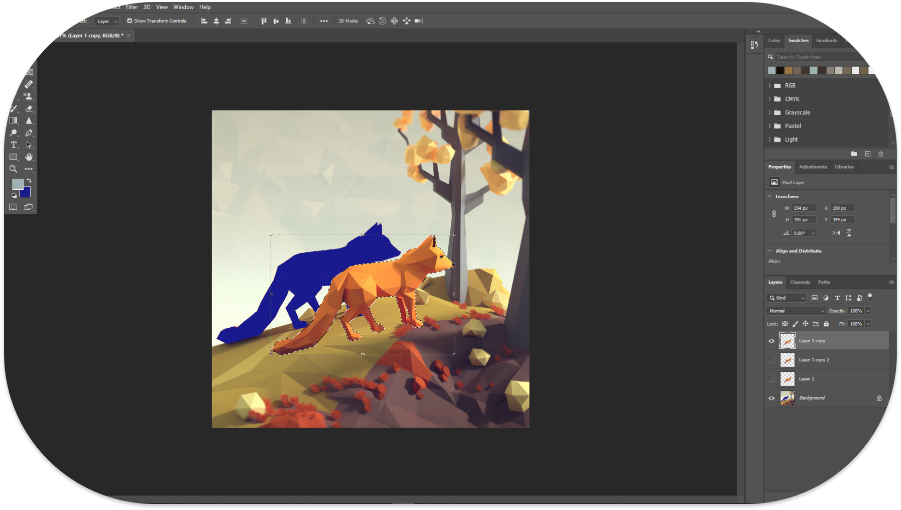
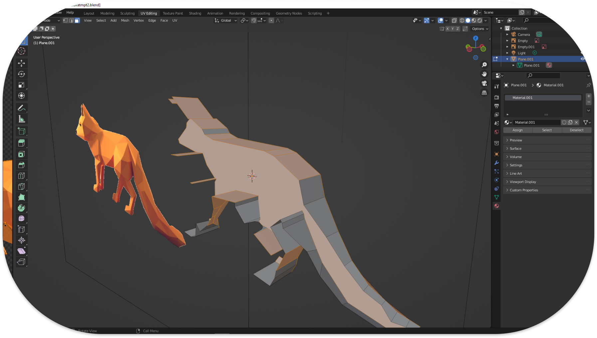
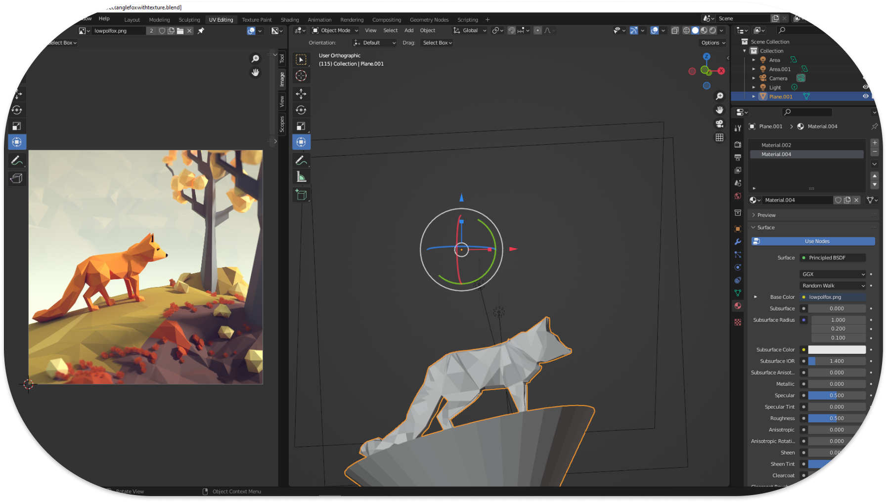
Figma
HTML
CSS
Javascript
Blender
Photoshop
Illustrator
Midjourney
GPT-4
Wordpress
Webflow
Hello! Thanks for stopping by. Welcome to my Portfolio. My name is Dante. I'm currently studying philosophy and cognitive science at Williams College, along with UI, UX and Interaction Design. I've had a somewhat nontraditional journey into the field of design over the past few years. I have always been fascinated by human decision making, the natural world, and the ways that the smallest of details can influence a person's thoughts and actions. On top of that, I grew up as a kid of the digital world. Figuring out to solve everyday problems around my house with software, connecting with my friends online, and constantly learning about the world led me to spend a lot of time with digital interfaces, like many in my generation. Now, I am spending my off time trying to learn every industry skill I can, as I explore potential opportunities going forward. My experience as a college athlete has taught me commitment and focus that I am eager to channel into my career as I develop day after day. I am looking to take on adventurous new projects, learn from excellent mentors, and create the best interactive products I can.
Email: djg3@williams.edu
LinkedIn: linkedin.com/in/dantegutbrod
(You can interact with these prototypes. Fullscreen them, if needed!)